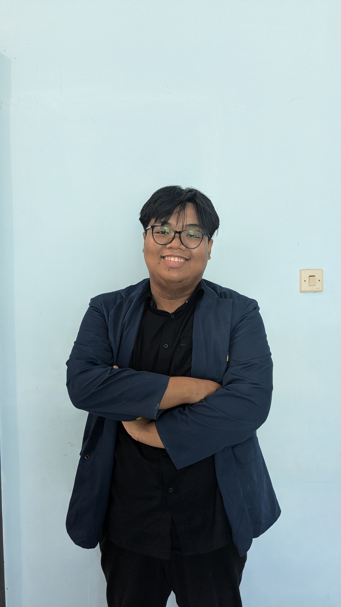

NIM: 22041100189
Jurusan: Teknik Informatika
Universitas: Universitas Trunojoyo Madura
Konsentrasi: Backend Development
Email: moch.yunus@trunojoyo.ac.id
Tanggal: 5-8 Agustus 2025
Kegiatan:
Tanggal: 11-15 Agustus 2025
Kegiatan:
Tanggal: 18-22 Agustus 2025
Kegiatan:
Tanggal: 25-29 Agustus 2025
Kegiatan:
Tanggal: 1-5 September 2025
Kegiatan:
Tanggal: 8-12 September 2025
Kegiatan:
Tanggal: 15-19 September 2025
Kegiatan:
Tanggal: 22-26 September 2025
Kegiatan:
Tanggal: 29 September - 3 Oktober 2025
Kegiatan:
Tanggal: 6-10 Oktober 2025
Kegiatan:
Tanggal: 13-17 Oktober 2025
Kegiatan:
Tanggal: 20-24 Oktober 2025
Kegiatan:
Tanggal: 27-31 Oktober 2025
Kegiatan:
Tanggal: 3-7 November 2025
Kegiatan:
Tanggal: 10-14 November 2025
Kegiatan:
Tanggal: 17-21 November 2025
Kegiatan:
Tanggal: 24 November - 5 Desember 2025
Kegiatan: